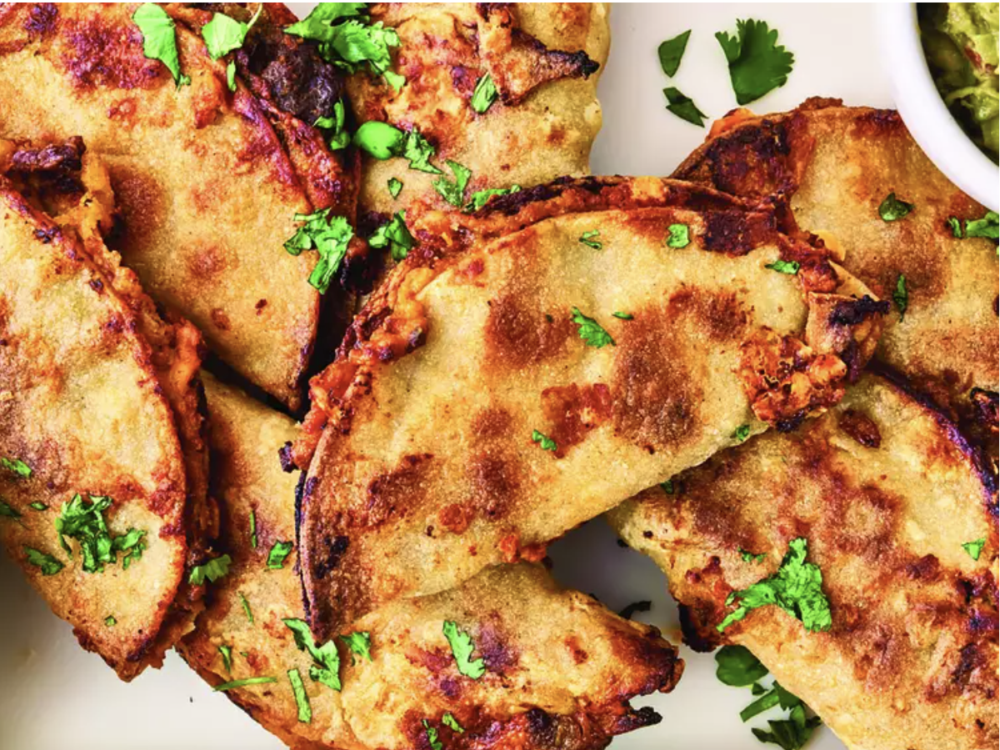

Home
Easiest Sheet Pan Tacos

Description
These are truly the easiest sheet pan tacos you will ever make. High temperature roasting on a sheet pan makes them crisp and golden, and the beef filling does not need pre-cooking. Try them—you'll be amazed. Top with your favorite taco toppings.
Ingredients
- 1 pound ground beef
- 1/4 cup finely chopped onion
- 4 ounces diced green chiles
- 1 teaspoon chili powder
- 1/2 teaspoon ground cumin
- 10 corn tortillas
Steps
- Step 1
Preheat the oven to 425 degrees F (220 degrees C). Line a rimmed baking sheet with foil or parchment paper and lightly coat with 1 tablespoon olive oil.
- Step 2
Combine beef, onion, green chiles, chili powder, cumin, garlic powder, and salt in a medium bowl and mix until well incorporated.
- Step 3
Wrap tortillas in a damp paper towel and microwave just until softened, about 30 seconds.
- Step 4
Spread about 3 tablespoons beef mixture over half of a tortilla in a very thin layer that reaches to the edges Spread about 1 tablespoon beans onto the other half. Sprinkle all over with about 2 tablespoons cheese. Fold tortilla in half to make a taco; place on prepared baking sheet. Repeat with remaining tortillas, meat and cheese. Brush tops of tacos with remaining oil.
- Step 5
Bake tacos in the preheated oven, flipping halfway through, until lightly browned, toasted, and crisp around the edges, 30 to 35 minutes. Serve with desired toppings.